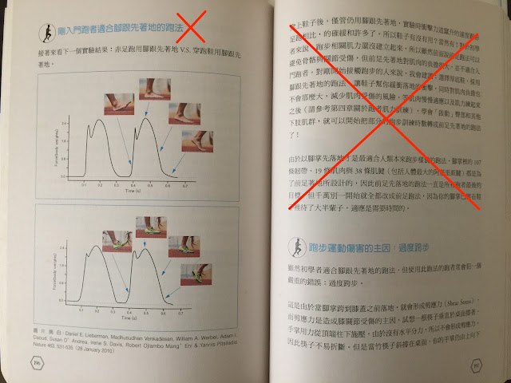

書中重大錯誤更正：《體能！技術！肌力！心志！全方位的馬拉松科學化訓練》
前陣子經大陸的讀者提醒，《體能！技術！肌力！心志！全方位的馬拉松科學化訓練》書中有一句小標與文字跟我現在講課的內容有出入。這一段在繁體版第 196~197 頁〈剛入門跑者適合腳跟先著地的跑法〉 (簡體版在第 145~146 頁)，之前我以為這個觀念是對的，現在我才認清這段論述有誤，對已經買書的讀者感到非常抱歉。下面把錯誤的地方提出來（以●標示），同時進行更正（以→標示），也已經請出版社之後再刷時進行更正：
●〈剛入門跑者適合腳跟先著地的跑法〉這個標題即是錯的。
→每個人都應該像原地跑一樣(包括初學者)，腳踝放鬆，自然以前足先著地，腳掌的動作都在臀部的正下方完成。正確的跑姿沒有入門與菁英之分。

●原始內文中：「對剛開始接觸跑步的人來說，我會建議：選擇厚底鞋，採用腳跟先著地的跑法，讓鞋子幫你緩衝落地的衝擊，同時對肌肉負擔也不會那麼大，減少肌肉受傷的風險」的論述也不對。
→穿上鞋子跑步時落地衝擊的力道與竄升的速度跟赤足跑相比的確緩和許多，不少鞋商就此聲稱跑鞋緩震的功效，但事實上鞋子只能使腳掌的衝擊感變得較為緩和，並無法改變小腿、膝蓋、大腿、下背與軀幹所承受的衝擊力大小。也就是說，落地時身體所承受的壓力是一樣的，若姿勢不對，就算穿上緩震的跑鞋，還是會受傷。況且，跑步運動傷害大都不是因為更重或更多的衝擊造成的，而是因為：「用錯誤的姿勢支撐體重」。
→ 在運動科學裡衝擊力的術語是「地面反作用力」(左圖曲線在縱軸上所對應的數值)，地面反作用力是什麼呢？它是「體重的變化量」。速度愈快，體重的變化量就會愈大(衝擊力愈大)，我們要做的不是去減少衝擊，而是學習用正確的姿勢去面對衝擊。換句話說：如果用正確的姿勢著地，只要地面安全的話，就算赤腳跑也不會受傷。
--
●內文中：「對於初學者來說，跑步相關肌力還沒建立起來，所以雖然前面說前足跑法可以避免骨骼與關節受傷，但前足先著地對肌肉的負擔很大，並不適合入門跑者」這個論述也不恰當。
→有不少跑者學了姿勢跑法之後都會擔心前足著地對肌肉的負擔太大，是否剛開始跑時要先從腳跟著地開始，再慢慢改成前足？其實「該用腳掌的哪個部位先著地？」是個錯誤的問題，這個問題會引發錯的技術知覺：在空中時想著用腳掌特定部位著地會導致「主動落地」(active landing)，這會在肌肉、結締組織與關節造成多餘的衝擊力。落地應該是像自由落體一樣，完全被動、什麼都不做讓它自由落下。所以既不應該腳跟先著地，也不應該想著前足先著地。
→「腳跟先著地」或「全腳掌著地」都並非「自然」的跑步方式。這個「自然」不是任何人的定義，而是自然的原理。你馬上就可以體會到，請站起來，試著原地跑 30 秒。
→請問剛才原地跑時，腳掌的哪邊先著地呢？你是否很自然地以前腳掌先著地，而且腳踝放鬆，前足觸地後腳跟接著下降輕觸地面。如果我要你在原地跑時刻意改成「全腳掌著地」（也就是前足和腳跟一起著地），覺得很怪是吧；若改成「腳跟先著地」就會覺得更怪。
--
我們都知道腳掌的落地位置要盡量接近臀部下方才不會煞車與形成受傷的剪應力。原地跑時，腳掌必然只會落在臀部下方。原地跑再久，腳掌拉得再高你也不會受傷，只會覺得累。關鍵來了， 只要腳掌落地位置接近在臀部的正下方，你就會自然地以前足先著地 。
所以，前足先著地只是腳掌落在臀部下方的結果，並非刻意追求的著地方式。
自然的跑姿應該是「像原地跑一樣向前跑」。不論是入門跑者、百馬跑者還是奧運等級的菁英跑者，都必須在各種速度下「像原地跑一樣」腳掌自然以前足先著地，腳踝放鬆，腳跟自然下降，而且腳掌的所有動作都在臀部正下方完成，沒有大範圍的前後擺盪動作。當我們看到攝影機跟著時速二十公里的 Dibaba 向前奔馳的畫面時，她就像原地跑一樣，沒有任何多餘的動作，所謂的優美跑姿，正是如此。
--
這本書完成於 2015 年 5 月，
當時對跑步技術的瞭解不像現在這麼深入，
直到近年來跟羅曼諾夫博士學習後才瞭解過去觀點有誤。
對於已經買書的讀者很抱歉，
我把錯誤的論述寫在書上，造成不少人的誤解。
對於這個嚴重的疏失，我深感不安，
故以此平台公開致歉與說明。
各位讀者/跑者也可以自行下載校正文件，